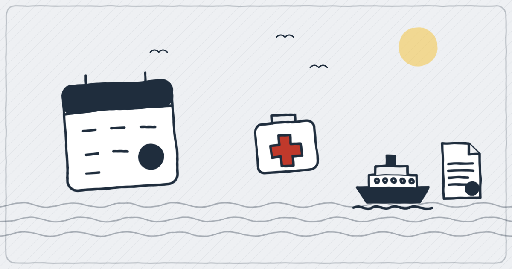

How Many Weeks Pregnant Can You Cruise? Every Line's Limit
You can cruise while pregnant on every major line as long as you will still be under 24 weeks on the day the ship gets back, not the day you board. Bring a dated letter from your doctor or midwife with your due date, and buy travel insurance that spells out its pregnancy limits before you pay the deposit.

Yes, you can take a cruise while pregnant, and the rule is the same across the big lines: you must be under 24 weeks for the whole cruise. The catch is the phrase "whole cruise". The line counts to the day you disembark, so what matters is how far along you will be when the ship gets home, not when you walk up the gangway.
How many weeks pregnant can you be on a cruise?
Every mainstream line that sails from Canada and the US sets the limit at 24 weeks, counted to the end of the voyage. The wording differs slightly from line to line, the number does not.
| Cruise line | Limit | Letter required? |
|---|---|---|
| Royal Caribbean | Under 24 weeks at the end of the cruise | Yes, with due date |
| Carnival | Under 24 weeks at the end of the cruise | Yes, with due date |
| Norwegian | Under 24 weeks at the end of the cruise | Yes, with due date |
| Princess | Under 24 weeks at the end of the cruise | Yes, with due date |
| Celebrity | Under 24 weeks at the end of the cruise | Yes, with due date |
| Holland America | Under 24 weeks at the end of the cruise | Yes, with due date |
| MSC | Under 24 weeks at the end of the cruise | Yes, with due date |
| Disney | Under 24 weeks at the end of the cruise | Yes, with due date |
Policies are rewritten from time to time, so read the current wording on your line's own site before you pay. If a line's page says "24th week" rather than "under 24 weeks", treat it as the same thing: 23 weeks and 6 days is the latest day most of them will accept.
Counting the weeks the way the line counts them
Pregnancy weeks are counted from the first day of your last period, which is also how your doctor dates the pregnancy. Take the number of weeks you will be on boarding day and add the number of nights on the cruise.
For a 14-night cruise, the latest practical boarding point is about 21 weeks. For a 3-night weekend sailing you could board at 23 weeks and still be inside the rule, though you may not want to.
Why the cut-off is 24 weeks and not later
The limit is about the worst day, not the average one. A ship's medical centre can stabilise a patient and arrange an evacuation, but it has no neonatal unit, and 24 weeks is roughly the point at which a baby born early has a chance of survival with intensive care. Before that point the line judges the risk acceptable; after it, a premature birth at sea would be a medical emergency the ship cannot handle.
It is also why the count runs to the last day. A problem on the final sea day of a 7-night Caribbean loop can still be two days from a hospital.
What the doctor's letter has to say
Most lines ask for a letter from your doctor or midwife, and the terminal can ask to see it even at ten weeks. Make sure it includes:
- Your estimated due date, written as a date rather than "about March"
- A line confirming you are fit to travel by sea for the dates of the cruise
- A line confirming the pregnancy is not considered high risk
- The practitioner's name, clinic and signature, dated within a few weeks of sailing
Keep it in your hand luggage with your passport, not in a checked bag. If you are refused boarding for being over the limit or for having no letter, the line treats it as a cancellation by you. There is no refund at that point and standard trip-cancellation insurance will not pay out either, because being over the limit is not an unforeseen event.
Pregnancy and travel insurance for Canadians
This is the part people skip, and it bites harder than the 24-week rule. Your provincial plan pays little or nothing outside the country and nothing useful on a ship. Most Canadian travel medical policies cover unexpected pregnancy complications only up to a set week, commonly somewhere between the 26th and 32nd week, and exclude routine delivery and any care for a baby born abroad. A few stop pregnancy cover far earlier, which can catch a 22-week cruiser. The wider picture is in cruise travel insurance for Canadians.
Pregnancy and travel insurance for Americans
Your health plan may cover emergencies abroad or may not, and Medicare generally does not. A ship's medical centre bills your onboard account, and a hospital in Mexico or the Bahamas bills you directly, so a travel medical policy matters just as much. Whichever side of the border you are on, ask the insurer in writing before you buy:
- Up to which week of pregnancy are complications covered?
- Is a pregnancy the insurer considers high risk excluded, and how do they define it?
- Is trip cancellation paid if your doctor advises against travel after booking?
- Is a newborn covered if the baby arrives early and abroad?
Buy at deposit time, when the trip is still many weeks away. A policy bought after a complication appears will not cover it.
Choosing a babymoon cruise you'll be comfortable on
Weeks 14 to 22 are the sweet spot for most people: early nausea has usually gone, you are inside the rule with room to spare, and walking a port for a morning is still easy.
- Alaska from Vancouver or Seattle is cool, calm in the Inside Passage, and a short hop for western Canadians and Americans. The Alaska from Vancouver budget shows what a week costs.
- Short Caribbean or Bahamas loops from Florida keep the week-counting simple and keep you within a day of US hospitals.
- A midship cabin on a lower deck moves least. If the cabin runs hot, a fan from guest services helps more than fiddling with the thermostat.
- Skip the long crossings. Transatlantic and Hawaii repositioning voyages spend five or six days away from any hospital.
Ask your doctor before taking any seasickness tablet. Some are considered fine in pregnancy, others are not, and the ship's shop will sell you whichever you point at.
Zika and port advisories for pregnant cruisers
Check the current Zika advice for every port on the itinerary, not just the destination. Both the Public Health Agency of Canada and the US CDC have advised pregnant travellers to avoid areas with Zika transmission, and the list changes as outbreaks come and go. Parts of the Caribbean, Mexico and Central America have been on it in recent years.
What to do if you find out you're pregnant after booking
Nothing dramatic. Work out your weeks on the disembarkation date. If you will be under 24, carry on, get the letter, and tell your insurer. If you will be over, call the line or your consultant straight away: moving to an earlier sailing before final payment usually costs little, while cancelling after it can cost most of the fare. If the line cancels the sailing itself, different rules apply and you are owed a refund.
Want this checked for your own sailing? A licensed cruise consultant can price it up and answer questions for free, with no obligation.
Ask a cruise expert →Once the baby arrives
Most lines set a minimum age of six months for infants, rising to twelve months on transatlantic, transpacific and some South America and Hawaii itineraries. So the earliest return to sea is a short sailing when the baby is around six months old, which for many families works out at the following year's Alaska season.
Questions people also ask
Can I cruise at 23 weeks pregnant?
Only if the cruise ends before you reach 24 weeks, which rules out almost every sailing of three nights or more. The line counts to the final day of the voyage. At 23 weeks on boarding day, a 7-night cruise would end at 24 weeks and you would be refused at the terminal.
Do cruise lines check if you're pregnant?
You declare it on the health questionnaire before boarding and the line expects a doctor's letter with your due date. Staff will not examine you, but if you are visibly pregnant and cannot show a letter, the terminal can refuse boarding and treat it as a no-show with no refund.
Is a babymoon cruise safe in the second trimester?
For a low-risk pregnancy, weeks 14 to 22 are the window most doctors are comfortable with and most people feel best in. Ask your own doctor first, choose a midship cabin on a low deck to feel less motion, and avoid ports under a current Zika advisory.